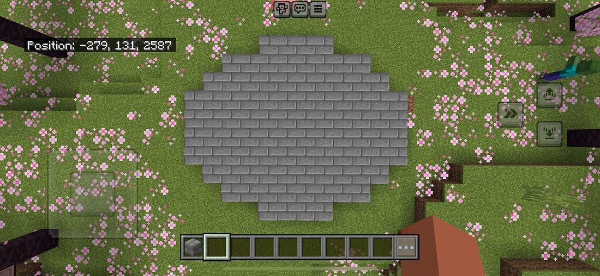
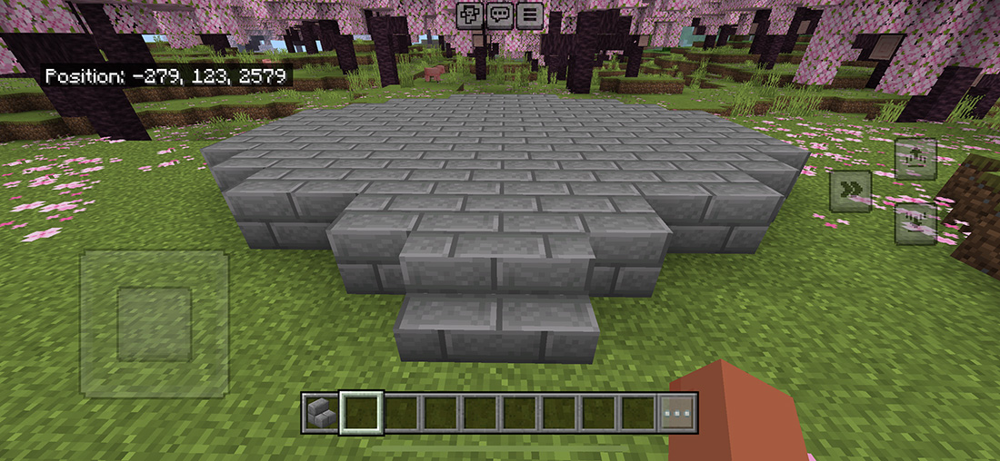

Step 2: Platform

Create a unique shape and fill it in using stone bricks.

In the front, place 4 stone brick stairs to resemble the image above.
Create a unique shape and fill it in using stone bricks.
In the front, place 4 stone brick stairs to resemble the image above.